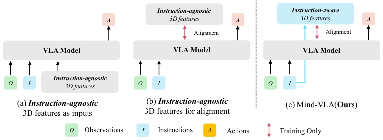
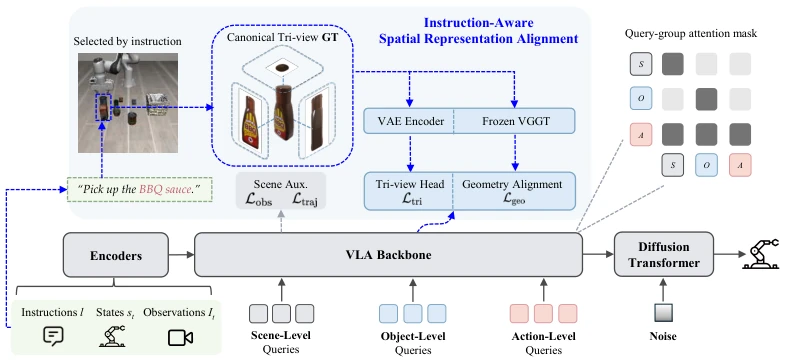
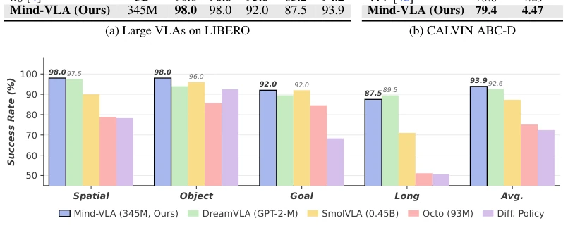
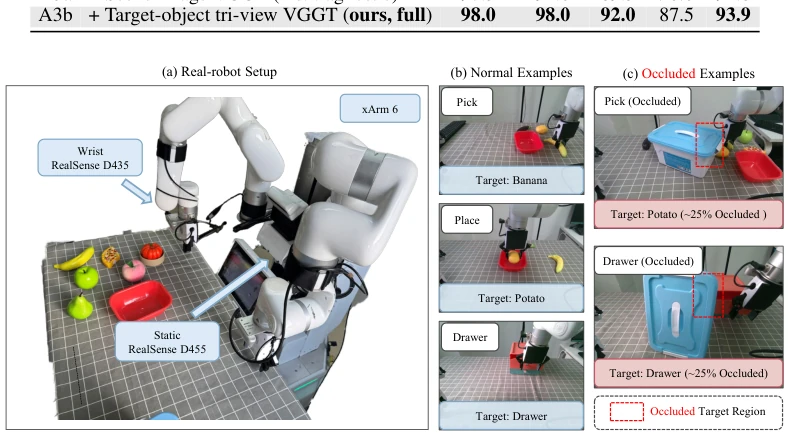

Mind-VLA 给 VLA 模型装了个“选择性聚焦”的滤镜，只盯着指令里的目标物体看，而不是整个场景。这招在遮挡任务上确实灵，推理时也不加开销，算是个聪明的“训练时作弊”。但代价是得提前给每个物体拍三视图或渲染 mesh，离真正的零样本部署还有距离，属于“有准备之仗”。对于需要精细操作的任务，这种 instruction-aware 的 3D 对齐确实比盲目对齐全场景更靠谱，只是泛化性上稍微打了点折扣，毕竟不能随便抓个新物体就用。
Mind-VLA equips the VLA model with a "selective focus" filter, focusing only on the target object in the instruction, rather than the entire scene. This approach is indeed effective in occlusion tasks, adds no overhead during inference, and counts as a clever "training-time cheat". However, the cost is capturing three views or rendering a mesh for each object in advance, still far from true zero-shot deployment, belonging to a "prepared battle". For tasks requiring fine-grained manipulation, this instruction-aware 3D alignment is indeed more reliable than blindly aligning the entire scene, but generalization is slightly compromised, after all, one cannot just grab a new object and use it.
Existing 3D-aware VLA methods (e.g., Spatial Forcing [8], GLaD [9]) although improving spatial understanding, are essentially instruction-agnostic. They align the geometric structure of the entire scene, ignoring the specific target object specified by the language instruction. This leads to the model struggling to distinguish the target from the background during fine-grained operations or when the target is occluded, resulting in a significant performance drop. Robot operations often care only about the objects in the instruction, not the entire environment, therefore the lack of instruction-aware 3D supervision is a fatal flaw of existing methods, limiting their generalization ability in complex scenes.

Figure 1: Comparison of 3D-aware VLA paradigms. Existing 3D-aware VLA methods are fun- damentally instruction-agnostic. They either provide instruction-agnostic 3D features as additional model inputs (a) [6, 5, 7] or align VLA representations with instruction-agnostic 3D features dur- ing training (b) [8, 9], neglecting the 3D geometry of the specific target object designated by the language instruction. (c) Mind-VLA (Ours) aligns VLA representations with instruction-aware 3D features during training, enabling instruction-aware 3D understanding.
Mind-VLA adds training-time auxiliary supervision on top of the base VLA framework. The pipeline is divided into: 1. Obtaining the target object corresponding to the instruction; 2. Preparing three views (top/front/side) of the object, rendering in simulation, photographing on real machine; 3. Extracting three-view features using frozen VAE and VGGT. Specific innovations: Object Queries decoded into three-view latent vectors, constrained by VAE latent prediction loss for geometric encoding; Intermediate layer Transformer features aligned with VGGT extracted target three-view features in multi-stage alignment, totaling four layers. Scene Queries retain scene-level auxiliary tasks. During inference, all auxiliary modules are removed, keeping only lightweight Query Tokens, achieving zero extra deployment cost. This design utilizes 3D priors while avoiding sensor dependency during inference. Loss functions include VAE latent MSE and VGGT feature cosine distance, ensuring strong binding between language instructions and target geometry.

Figure 2: Overview of Mind-VLA. Instructions, states, and observations are tokenized and pro- cessed by a transformer backbone together with three groups of learnable queries. Scene queries are decoded into per-patch RGB and dense 2D motion. Object queries are decoded into a target-object tri-view latent. The backbone is also aligned with VGGT [27] features extracted from the same tri- view at four intermediate layers. Action queries condition a diffusion transformer [32] that predicts the next three actions. The right panel shows the attention mask, which enforces temporal causality and separates different query groups. Auxiliary branches are used only during training.
Achieved 93.9% success rate on LIBERO, average completion length 4.47 on CALVIN, surpassing most 7B models. In real robot xArm 6 experiments, normal task success rate 69%, occlusion task (25% occlusion) reached 54%, better than Seer's 22%. Ablation shows target object three-view alignment improves significantly compared to scene image alignment under occlusion (+13pp vs -29pp drop). Proves the key role of 3D supervision for specific targets in robustness. Additionally, slightly inferior to DreamVLA on long horizon tasks, indicating scene-level modeling still has value.

Figure 3: Mind-VLA vs. compact-backbone baselines on LIBERO. Per-suite success rate (%). Bold-italic labels mark Mind-VLA’s value; lighter italic labels mark the best non-Mind-VLA base- line per suite.

Figure 4: Real robot setup and tasks. (a) Dual-arm xArm 6 workspace (one arm used) with static and wrist-mounted cameras. (b) Example tasks under normal conditions: Pick, Place, and Drawer. (c) Occluded conditions for Pick and Drawer, where ∼25% of the target is blocked by a physical occluder (highlighted in red).